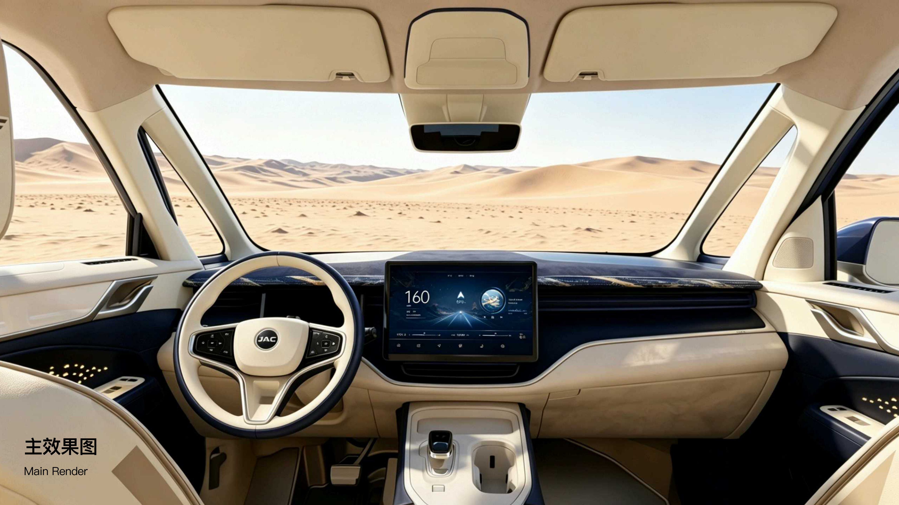
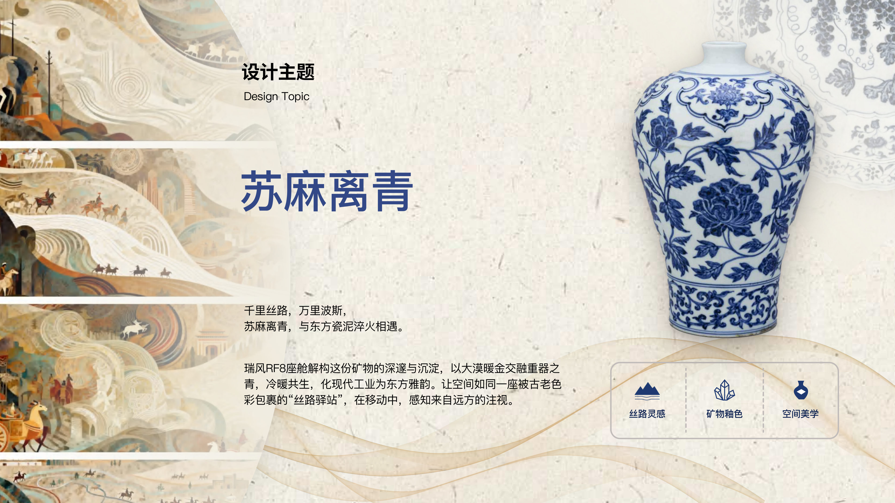
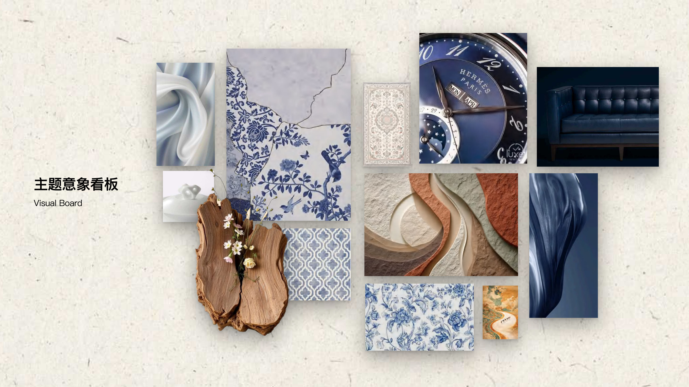
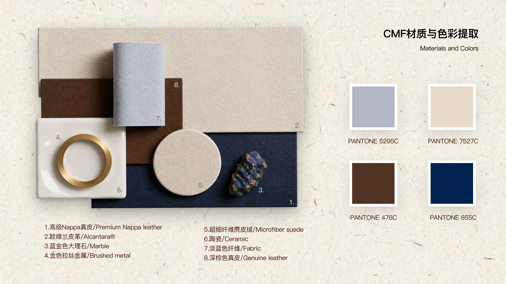
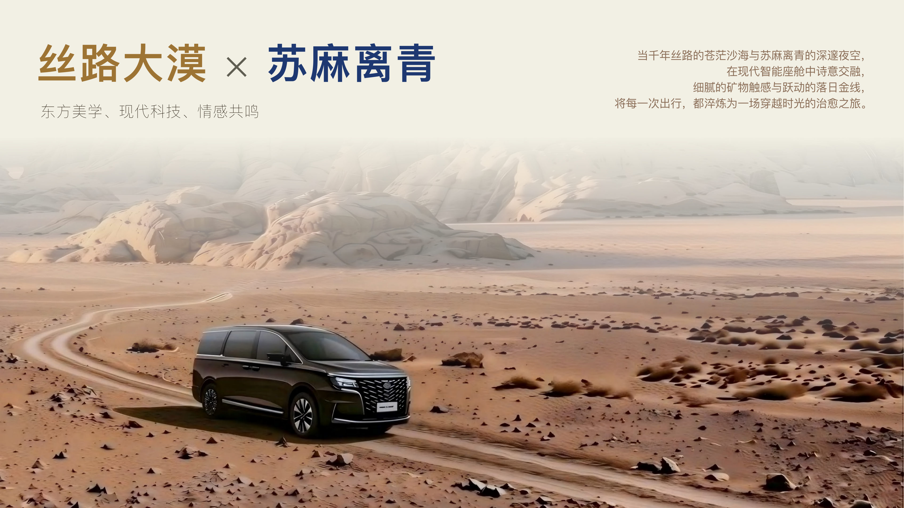

设计主题 Design Topic
丝路大漠 × 苏麻离青
东方美学、现代科技、情感共鸣。当千年丝路的苍茫沙海与苏麻离青的深邃夜空， 在现代智能座舱中诗意交融——细腻的矿物触感与跃动的落日金线， 冷暖共生，化现代工业为东方雅韵。

产品设计 2 · 综合设计图册 · Digital 展陈
千里丝路 · 万里波斯 · 东方瓷韵
以矿物钴蓝「苏麻离青」为题，将丝路大漠的苍茫与青花瓷的深邃， 注入汽车智能座舱。这里汇集 CMF、人机界面与功能结构三大研究单元的完整成果。

「苏麻离青」是元明青花瓷上那一抹幽蓝钴料，沿丝绸之路自波斯远道而来， 于景德镇的窑火中沉淀为东方审美的极致。
本图册以《产品设计2》课程为载体，围绕汽车内饰 CMF、汽车人机界面、汽车周边产品结构三条主线， 完成从前期调研、行业趋势研究到原创设计落地的完整闭环。
我们让瑞风 RF8 的座舱成为一座被古老色彩包裹的「丝路驿站」—— 让每一次出行，都成为一场穿越时光的治愈之旅。
课程围绕汽车内饰展开，按教学单元递进推进，每一阶段以 PPT 汇报为节点， 最终整合为统一装订的综合设计图册。
以瑞风 RF8 座舱为载体，解构「苏麻离青」的矿物质感， 融合丝路大漠暖金与青花瓷深蓝，完成一套东方雅韵的智能座舱 CMF 设计方案。
东方美学、现代科技、情感共鸣。当千年丝路的苍茫沙海与苏麻离青的深邃夜空， 在现代智能座舱中诗意交融——细腻的矿物触感与跃动的落日金线， 冷暖共生，化现代工业为东方雅韵。


以象牙白皮革为主调奠定纯净底色，顶端群青哑光饰板拉开明暗层次； 核心区点缀天然青金石纹理与金色拉丝缝隙，在柔和光影下尽显细腻考究的现代奢华感。

通过上下分色构建层次：上部米白轻盈通透，下部深蓝皮革增强包裹感。 发光纹理在深色基底中若隐若现；纹样融合西方几何与中原传统元素，经重构后焕新呈现。

糅合传统缂丝丝绸肌理，搭配哑光钛金与柔润皮革拼接相融，古今材质精妙交织， 质感层次浑然天成。古韵匠心碰撞现代极简，融东方雅韵与轻奢格调于一体。

摒弃繁琐花纹，利用苏麻离青的晕散感模拟丝路流动的氛围，营造神秘静谧的「苍穹墨舞」空间。 天幕以 LED 光源模组叠加光导纤维，星点流转，宛若大漠夜空。

灵感溯源波斯，以大漠暖金交融古韵青花，将藏红花与木质香调调配入味。 暖木辛香——初调藏红花，中调与尾调层层递进，助您在纷繁旅途中，安享一份来自远方的温煦与静谧。




调研汽车人机界面（软硬件）的设计技术与趋势，拆解设计要素，针对主题完成界面优化设计。
该单元的资料正在整理中。请把人机界面的调研报告与设计方案（图片 / PDF）发给我， 我会按上方结构填入效果图、交互流程图与规范表，并与 CMF 单元保持一致的「苏麻离青」视觉风格。
选取一件汽车周边产品，分析外观覆盖件的材料与工艺，拆解装配结构并完成数字化建模。
把结构研究报告、拆解图与建模渲染图发给我即可。我会补上材料工艺解析、装配结构拆解图 与数字化模型展示，统一排版到本单元。
三大模块整体回顾、设计收获、设计创新点、现存问题与改进方向，以及学习感悟与致谢。
课程总结文字发给我，我会以编辑式版式呈现，为整站收束。